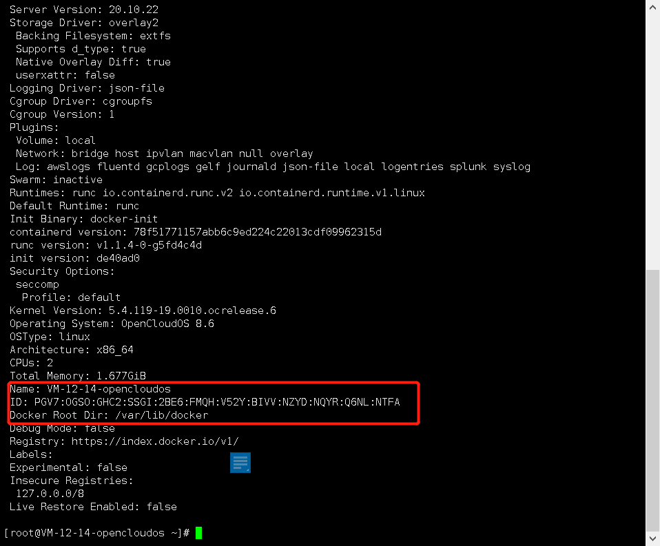

Docker 的使用可以方便我们管理系统中的服务，相较于传统的虚拟机，Docker 的启动速度更快，体积更小。
# 准备工作
准备一台 linux 机器 或者使用 vmware 创建虚拟机
本文使用的系统为 opencloudos，小伙伴们可以使用 vmware 创建一台 centos 虚拟机
# 操作步骤
# 安装 Docker
1. 登录 Linux 实例
2. 添加 Docker 软件源
dnf config-manager --add-repo=http://mirrors.tencent.com/docker-ce/linux/centos/docker-ce.repo
3. 安装 Docker
dnf install -y docker-ce --nobest
4. 运行 Docker
systemctl start docker
5. 查看 Docker 安装信息
docker info
如下图所示 docker 就安装成功啦

# Dokcer 使用
# 管理 Docker 守护进程:
运行 Docker 守护进程：
systemctl start docker
停止 Docker 守护进程：
systemctl stop docker
重启 Docker 守护进程：
systemctl restart docker
# 使用 Docker 拉取 nginx
# 搜索Nginx镜像
docker search nginx
# 拉取Nginx镜像
docker pull nginx
# 查看镜像 或者名为nginx的镜像
docker images
docker images nginx
# 修改镜像tag
docker tag nginx:latest new_nginx:new_tag
# 运行镜像，生成容器
# 命令解读：
# -d:以后台守护线程运行
# --name:容器命名
# -p 80:80 : 映射端口，容器内部80端口映射到服务器80端口
# nginx ：指定的镜像（可以通过docker images 查看）
docker run -d --name nginx -p 80:80 nginx(镜像ID或者镜像名字都可以)
#查看容器
docker ps
#强制删除镜像
docker rmi -f nginx:latest
#停止容器
docker stop [OPTIONS] Container [Container …]
#删除容器
docker rm contentid